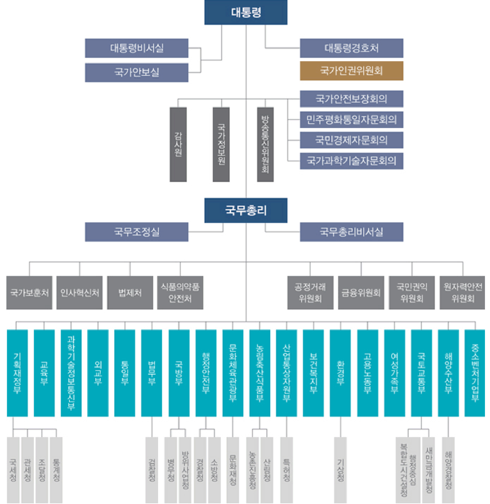

Korea Information
About Korea

대한민국(Republic of Korea), 줄여서 '한국(Korea)'이라고도 부른다.
위치와 면적
아시아 대륙 북동쪽 한반도에 위치하며, 남한의 면적은 100,188.1㎢로 한반도와 부속도서를 포함한 남·북한 전체 면적 221,000㎢의 45%이다. 한 반도의 면적은 캄보디아(181,035㎢)보다 조금 크고, 필리핀(300,000㎢), 베트남(331,210㎢), 일본(377,915㎢)의 약 2/3 정도의 크기이다. 남북한 을 아우르는 한반도는 북서쪽으로 압록강을 경계로 중국과 경계를 이루고, 북동쪽으로는 두만강을 경계로 중국 및 러시아와 마주하고 있다. 3면이 바 다인 한국은 서쪽으로 황해, 동쪽으로 동해, 남쪽으로 남해에 의해 둘러싸여 있다. 한국의 남부 및 서부는 대체로 평야이며, 동부 및 북부는 산지이다. 한국에서 가장 높은 산은 백두산(2,744m)이다. 한국 북부의 개마고원은 ‘한국의 지붕’이라고 불리며, 반도의 동해안을 따라 달리는 산맥인 태백산맥 은 백두대간이라고도 불린다. 한국의 유명한 섬으로는 제주도, 거제도, 진도, 울릉도 등이 있는데, 제주도와 울릉도는 화산 활동에 의해 형성되었다. 한국의 황해안과 남해안은 리아스식 해안이 발달되어 있으며, 조수 간만의 차가 크다. (출처 : 국토교통부)
국기(태극기)
한국의 국기인 ‘태극기’는 흰색 바탕에 가운데 태극 문양과 네 모서리의 건곤감리 4괘로 구성되어 있다. 태극기의 흰색 바탕은 밝음과 순수 그리고 전 통적으로 평화를 사랑하는 우리의 국민성을 나타내고 있다. 가운데의 태극 문양은 음(파란색)과 양(빨간색)의 조화를 상징하는 것으로 우주 만물이 음양의 상호 작용에 의해 생성하고 발전한다는 대자연의 진리를 형상화한 것이다. 네 모서리의 4괘는 음과 양이 서로 변화하고 발전하는 모습을 나타 낸 것이다. 그 가운데 건괘는 우주 만물중에서 하늘을, 곤괘는 땅을, 감괘는 물을, 이괘는 불을 상징한다. 이들 4괘는 태극을 중심으로 통일과 조화를 이루고 있다. 이와 같이, 예로부터 우리 선조들이 생활 속에서 즐겨 사용하던 태극 문양을 중심으로 만들어진 태극기는 우주와 더불어 끝없이 창조와 번영을 희구하는 대한민국 국민의 이상을 담고 있다. (출처 : 행정안전부)
국화(무궁화)
예로부터 우리 민족의 사랑을 받아온 무궁화(無窮花)는 우리나라를 상징하는 꽃으로 ‘영 원히 피고 또 피어서 지지 않는 꽃’이라는 뜻을 지니고 있다. 옛 기록을 보면 우리 민족은 무 궁화를 고조선 이전부터 하늘나라의 꽃으로 귀하게 여겼고, 신라는 스스로를 ‘근화향(槿 花鄕 : 무궁화 나라)’이라고 부르기도 했다. 중국에서는 우리나라를 예로부터 “무궁화가 피고 지는 군자의 나라”라고 칭송했다. 이처 럼 오랜 세월 동안 우리 민족과 함께해 온 무궁화는 조선 말 개화기를 거치면서 “무궁화 삼 천리 화려강산”이란 노랫말이 애국가에 삽입된 이후 더욱 국민들의 사랑을 받아왔다. 이 같은 무궁화에 대한 우리 민족의 한결같은 사랑은 일제 강점기에도 계속되었고, 광복 후에 무궁화를 자연스럽게 나라꽃(國花)으로 자리 잡게 했다.
무궁화의 학명은 Hibiscus syriacus L.이며, 영문명은 Rose of Sharon으로, 한국, 중국 중부,인도 북부, 일본 등에 분포하고 있으며, 가을에 잎이 떨 어지는 낙엽활엽관목으로서 높이 3~4m까지 자라며 모양은 반원형이다. 매년 7월에서 10월까지 꽃이 피는데, 꽃은 색깔과 형태에 따라 매우 다양하 여 아름답고 화려하며 새벽에 피어 저녁에 시들지만 매일 새로운 꽃이 100여 일 동안 핀다(출처 : 행정안전부)
인구
한국의 총인구는 51,836,763명(2019. 4. 행정안전부)으로 세계 28위에 해당하며, 인구 밀도는 513명/㎢(2017.8.11. 통계청)으로 세계 23위 수준이 다.
경제
한국의 GDP는 1조 5,302억 달러로 세계 12위 수준이며, 1인당 GDP는 2만 9,743달러이다(2017,통계청). 주요 수출품으로는 석유제품, 반도체, 자 동차, 선박, 평판디스플레이 등이 있다.
정부조직
한국은 대통령제를 택하고 있으며, 대통령은 정부의 수반으로서 법령에 따라 모든 중앙행정 기관의 장을 지휘·감독한다. 국무총리는 대통령의 명을 받아 각 중앙행정기관의 장을 지휘·감독한다. 아래 도표에서 보는 바와 같이 한국의 정부조직은 2017년 7월 기준 18부 5처 17청으로 구성되어 있다. 이중 18개 행정각부는 다음과 같은 업무를 맡고 있다.
- 기획재정부 중장기 국가발전전략수립, 경제·재정정책의 수립·총괄·조정, 예산·기금의 편성·집행·성과관리, 화폐·외환·국고·정부회계·내국세제·관세·국 제금융, 공공기관 관리, 경제협력·국유재산·민간투자 및 국가채무에 관한 사무를 관장한다.
- 기획재정부 중장기 국가발전전략수립, 경제·재정정책의 수립·총괄·조정, 예산·기금의 편성·집행·성과관리, 화폐·외환·국고·정부회계·내국세제·관세·국 제금융, 공공기관 관리, 경제협력·국유재산·민간투자 및 국가채무에 관한 사무를 관장한다.
- 외교부 외교정책의 수립·시행, 다자·양자 경제외교 및 국제경제협력외교, 대외경제 관련 외교정책의 수립·시행 및 총괄·조정, 국제관계업무에 관한 조정, 조약 및 그 밖의 국제협정, 문화협력, 대외홍보, 재외동포 정책의 수립, 재외국민 보호·지원, 국제정세의 조사·분석 및 이민에 관한 사무를 관장한다.
- 통일부 통일 및 남북대화·교류·협력에 관한 정책의 수립, 통일교육, 기타 통일에 관한 사무를 관장한다.
- 법무부 검찰, 보호처분 및 보안관찰처분의 관리와 집행, 행형, 소년의 보호와 보호관찰, 갱생보호, 국가보안사범의 보도, 사면, 인권옹호, 공증, 송무, 국적의 이탈과 회복, 귀화, 사법시험 및 군법무관임용시험, 법조인양성제도에 관한 연구·개선, 법무에 관한 자료조사, 대통령·국무총리와 행정 각부처의 법령에 관한 자문과 민사·상사·형사(다른 법령의 벌칙조항을 포함한다)·행정소송 및 국가배상관계법령의 해석에 관한 사항, 출입국·외국인정책 에 관한 사무 기타 일반 법무행정에 관한 사무를 관장한다.
- 국방부 국방에 관련된 군정 및 군령과 그 밖에 군사에 관한 사무를 관장한다.
- 행정안전부 국무회의의 서무, 법령 및 조약의 공포, 정부조직과 정원, 상훈, 정부혁신, 행정능률, 전자정부, 개인정보보호, 정부청사의 관리, 지방자치제도, 지방 자치단체의 사무지원·재정·세제, 낙후지역 등 지원, 지방자치단체 간 분쟁조정, 선거·국민투표의 지원 및 국가의 행정사무로서 다른 중앙행정기 관의 소관에 속하지 아니하는 사무를 관장한다.
- 문화체육관광부 문화·예술·영상·광고·출판·간행물·체육·관광, 국정에 대한 홍보 및 정부발표에 관한 사무를 관장한다.
- 농림축산식품부 1. 식량의 안정적 공급과 농산물에 대한 품질관리, 2. 농업인의 소득 및 경영안정과 복지증진, 3. 농업의 경쟁력 향상과 관련 산업의 육성, 4. 농촌지 역 개발 및 국제 농업 통상협력 등에 관한 사항, 5. 식품산업의 진흥 및 농산물의 유통과 가격 안정에 관한 사항의 사무를 관장한다.
- 산업통상자원부 상업·무역·공업·통상, 통상교섭 및 통상교섭에 관한 총괄·조정, 외국인 투자, 산업기술 연구개발정책 및 에너지·지하자원에 관한 사무를 관장한다.
- 보건복지부 보건위생·방역·의정·약정·기초생활보장·자활지원 및 사회보장, 인구·출산·보육·아동·노인 및 장애인에 관한 사무를 관장한다.
- 환경부 자연환경, 생활환경의 보전 및 환경오염방지에 관한 사무를 관장한다.
- 고용노동부 고용정책의 총괄, 고용보험, 직업능력개발훈련, 고용평등과 일·가정 양립 지원, 근로조건의 기준, 근로자 복지후생, 노사관계의 조정, 노사협력의 증진, 산업안전보건, 산업재해보상보험과 그 밖에 고용과 노동에 관한 사무를 관장한다.
- 여성가족부 여성정책의 기획·종합, 여성의 권익증진 등 지위향상, 가족과 다문화가족정책의 수립·조정·지원, 건강가정사업을 위한 아동업무 및 청소년의 육 성·복지·보호에 관한 사무를 관장한다.
- 국토교통부 국토종합계획의 수립·조정, 국토 및 수자원의 보전·이용 및 개발, 도시·도로 및 주택의 건설, 해안·하천 및 간척, 육운·철도 및 항공에 관한 사무를 관장한다.
- 해양수산부 해양정책, 수산, 어촌개발 및 수산물 유통, 해운·항만, 해양환경, 해양조사,해양자원개발, 해양과학기술연구·개발 및 해양안전심판에 관한 사무를 관장한다.
- 중소벤처기업부 혁신 창업기업 및 기술개발 제품의 공공구매 활성화, 대·중소기업 간 격차 해소, 4차 산업혁명 인력 양성, 소상공인·자영업자 역량 강화, 공정거래 질서 확립 및 대·중소기업 협력 확대에 관한 사무를 관장한다.
지방행정구역
한국의 전 지역은 17개의 광역자치단체와 226개 기초 자치단체로 나뉜다. 광역자치단체에는 1개의 특별시, 6개의 광역시, 1개의 특별자치시, 8개의 도, 1개의 특별 자치도가 있다. 기초자치단체는 75개의 자치시, 82개의 군(郡), 69개의 자치구(自治區)가 있고, 각 기초자치단체의 하부행정 구역인 읍면동이 총3,503개가 있다(2018년 4월 기준). 서울, 인천, 경기도(부천, 안양, 성남, 의정부,광명, 시흥, 의왕, 군포, 과천, 구리, 미금, 광주, 고양, 하남시 등)를 합쳐서 수도권이라고 한다. 수도권에는 서울 1,000만 명, 경기도 1,200만 명, 인천 290만 명 등 전체 인구의 약 50%가 밀집하여 살고 있다. 한국은 지방자치제를 시행하고 있는데, 4년마다 지역주민들이 참여하는 선거를 통해 지방자치단체장(광역 : 특 별시장, 광역시장, 도지사 / 기초 : 시장, 군수, 구청장)과 지방의회의원, 시·도 교육감을 선출하고 있다.
| 특별시 | 광역시 |
|---|---|
| 1. 서울특별시 | 2. 부산광역시 |
| 3. 대구광역시 | |
| 4. 인천광역시 | |
| 5. 광주광역시 | |
| 6. 대전광역시 | |
| 7. 울산광역시 |
| 특별자치시 | 도 | 특별자치도 |
|---|---|---|
| 8. 세종특별자치시 | 9. 경기도 | 17. 제주특별자치도 |
| 10. 강원도 | ||
| 11. 충청북도 | ||
| 12. 충청남도 | ||
| 13. 전라북도 | ||
| 14. 전라남도 | ||
| 15. 경상북도 | ||
| 16. 경상남도 |
| 특별시 | 1.서울특별시 |
|---|---|
| 광역시 | 2. 부산광역시 3. 대구광역시 4. 인천광역시 5. 광주광역시 6. 대전광역시 7. 울산광역시 |
| 특별자치시 | 8. 세종특별자치시 |
| 도 | 9. 경기도 10. 강원도 11. 충청북도 12. 충청남도 13. 전라북도 14. 전라남도 15. 경상북도 16. 경상남도 |
| 특별자치시 | 17. 제주특별자치도 |